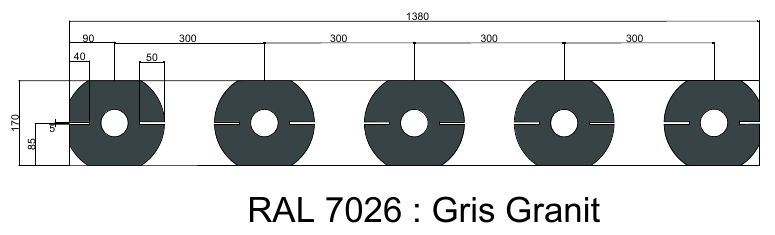

102Pistolet vitesse 10 m
Le tir rapide à l'air comprimé : des séries de 5 coups sur des cibles basculantes, pour travailler le rythme et le retour de visée.
Les caractéristiques de l'épreuve
| Numéro de discipline FFTir | 102 |
| Épreuve olympique | Non |
| Épreuve paralympique | Non |
| Type d'arme | Pistolet à air comprimé ou CO2 |
| Calibre | 4,5 mm |
| Poids de départ minimal | 500 g |
| Cibles | 5 cibles vitesse basculantes (et cibles classiques selon l'installation) |
| Distance | 10 m |
| Programme | Séries de 5 coups, un coup par cible |
| Temps de tir | 10 secondes par série à partir du signal |
| Préparation | 3 minutes, puis une série d'essai |
| Comptage | 1 point par cible abattue |
| Finale | 6 finalistes, 8 séries de 5 coups en 10 s |
Caractéristiques des armes et des cibles d'après le règlement ISSF ; programme et temps d'après les mémentos FFTir 2026. Vérifiez toujours la version en vigueur.
Les commandements
Voici, dans l'ordre, les commandements de l'arbitre et ce qu'ils signifient pour le tireur.
| Moment | Commandement | Ce qu'il faut faire |
|---|---|---|
| H-10 | « SÉRIE… ATHLÈTES À VOS POSTES » | Message d'accueil, on sort l'arme pour du tir à sec et des visées. Contrôles des arbitres. |
| H-4 | « DÉBUT DE PRÉPARATION » | 3 minutes de préparation : tirs de réglage sur cible papier ou sur les cibles vitesse débloquées. |
| H-1 | « STOP » | Fin de la préparation. |
| H | « SÉRIE D'ESSAIS… CHARGEZ » | On charge pour la série d'essai. |
| +1 min | « ATTENTION » | Les cibles vitesse sont bloquées (lampe rouge allumée) ou les cibles classiques s'effacent. |
| +7 s | Signal (lampe verte ou « TIR ») | Les cibles se débloquent : on lève le bras et on tire sa série. |
| Fin de série | Lampe rouge | Les cibles sont bloquées ; les impacts tardifs comptent jusqu'à 6 mm d'ovalisation. |
| Après chaque série | — | Les cibles abattues sont comptées (1 point chacune), annoncées et notées. |
| Fin | « STOP… DÉCHARGEZ » | Fin du match. |
| Après | « VÉRIFIEZ (devant l'arbitre) ET RANGEZ VOS ARMES » | Vérification et rangement. Se laver les mains. |
Source : mémento d'arbitrage FFTir 2026 ↗
Les incidents
En cas d'incident de tir
- Garder l'arme pointée vers le bas, la main sur la poignée, lever le bras libre et ne plus toucher l'arme.
- L'arbitre décide si l'incident est admis (une seule série à recommencer) ou non admis (on garde le résultat partiel).
- Après une série recommencée, on retient le moins bon résultat de chaque cible entre les deux séries.
- Un incident pendant la série d'essai n'est pas pris en compte.
Gêne et interruptions
- Série interrompue : annulée et recommencée ; au-delà de 15 minutes d'interruption, une série d'essai est tirée à la reprise.
- Gêne reconnue : la série est annulée et recommencée. Gêne non justifiée : pénalité d'une cible.
- Cible électronique en panne plus de 5 minutes : changement de poste, 5 minutes et essais illimités.
La finale
- Touché = 1 point, manqué = 0.
- Après la 4e série, le dernier est éliminé, puis un tireur après chaque série, jusqu'au duel de la 8e série.
- Égalité : séries de barrage de 5 coups en 10 secondes.
Le nouveau visuel de la cible vitesse 10 m
Pour rapprocher la vitesse 10 m du tir à 25 m, la CNS Pistolet de la FFTir a conçu et testé un nouveau visuel : un disque noir avec des moustaches blanches, comme sur la cible vitesse 25 m. Il devient officiel dès le début de la saison sportive 2026/2027, pour les adultes et les écoles de tir.

- Deux fabricants de cibles sont déjà prêts à fournir ce visuel.
- Les cibles électroniques Vitesse 10 m Sport Quantum l'ont déjà intégré à leur logiciel.
- Pour s'entraîner sur papier : la nouvelle cible vitesse 10 m à imprimer (V3).
Les textes officiels
Cette page résume et reformule les mémentos d'arbitrage de la FFTir. En cas de doute, seuls le règlement ISSF et les mémentos officiels font foi : ils sont mis à jour régulièrement.
Les exercices qui préparent cette épreuve
Cinq cibles en peu de temps : le placement, le passage d’une cible à l’autre et le rythme.
MonTirSportif – https://pistol.montirsportif.com/epreuves/pistolet-vitesse-10m.html